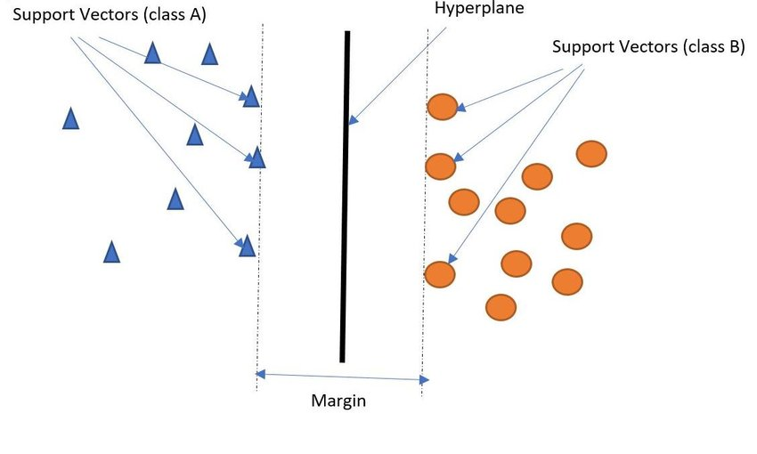
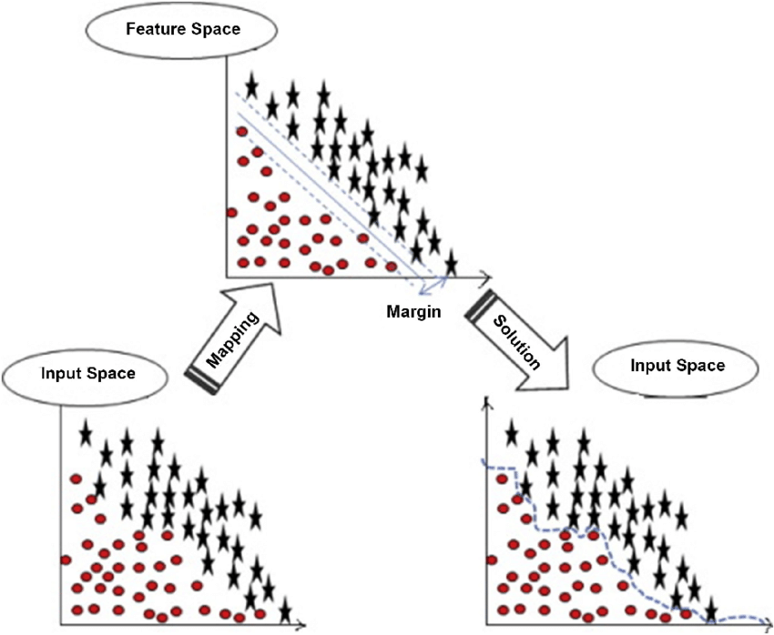
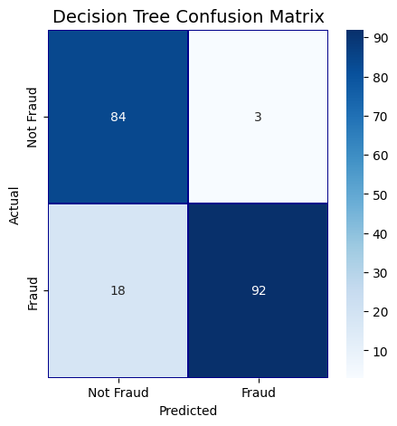
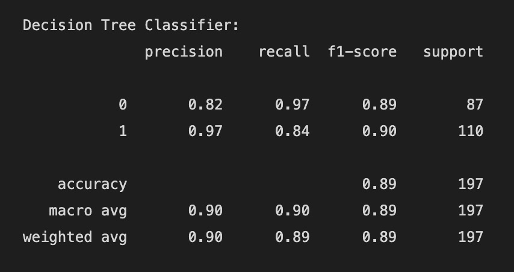
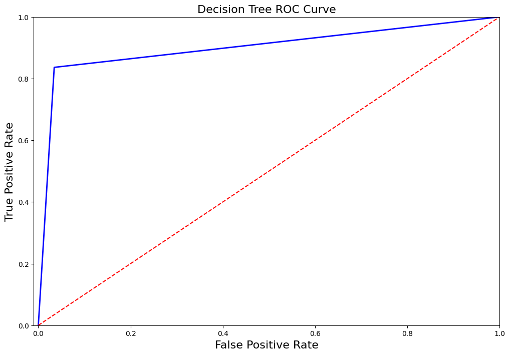

Support Vector Machines

Overview
Why are SVM linear Seperators?
Support vector machines (SVMs) are often used as linear classifiers as their objective is to find a linear decision boundary that separates the classes with the largest margin. This is known as the maximum margin hyperplane (MMH) and it is a linear separator.The MMH is the line, plane or hyperplane that maximizes the distance between the two classes of data points in a high-dimensional space. In two dimensions, the MMH is simply a line that separates the two classes of points, while in higher dimensions, it is a hyperplane that separates the two classes. If the data is not linearly separable, SVMs uses a technique called kernel methods to transform the data into a higher-dimensional space where it becomes linearly separable.How does kernel work in SVM?
In order to move the input data into a higher-dimensional space, where linear separability is more possible, the kernel function is applied. The decision boundary that divides the classes with the largest margins is known as the maximum margin hyperplane (MMH), and it is discovered using the converted data.The inner product between two data points in the transformed feature space is computed by the kernel function, which is comparable to calculating how similar the two data points are. The linear kernel, polynomial kernel, radial basis function (RBF) kernel, and sigmoid kernel are the most often utilized kernel functions.
Why is calculating dot product is so essential while doing SVM?
The ability to compute the similarity between two data points in a high-dimensional space without explicitly computing the coordinates of the data points in that space makes the dot product essential to the use of the kernel in SVMs.The kernel function makes it possible for us to calculate the dot product between the data points in the feature space rather than the coordinates of the data points in the feature space. The similarity between the two data points in the feature space is determined by the dot product. The more similar the two data points are in the feature space, the greater the dot product. Without directly calculating the coordinates of the data points in the feature space, the kernel function enables us to use the SVM algorithm. As a result, even when the explicit computation of the coordinates in that space would be impractical, SVMs can be used with very high-dimensional feature spaces.
 
Radial Basis Function
Due to its resemblance to the Gaussian distribution, RBF kernels are among the most extensively used kernels and the most versatile kind of kernelization. For two points X1 and X2, the RBF kernel function calculates their similarity or how near they are to one another. where,1. ‘σ’ is the variance and our hyperparameter
2. ||X₁ - X₂|| is the Euclidean (L₂-norm) Distance between two points X₁ and X₂
Polynomial Function
An SVM kernel known as a polynomial kernel maps the data into a higher-dimensional space using a polynomial function. This is done by taking the dot product of the polynomial function in the new space and the original space's data points. The polynomial kernel is often used in SVM classification problems where the data is not linearly separable. By mapping the data into a higher-dimensional space, the polynomial kernel can sometimes find a hyperplane that separates the classes. The polynomial kernel has a number of parameters that can be tuned to improve its performance, including the degree of the polynomial and the coefficient of the PolynomialFor degree d polynomials, the polynomial kernel is defined as: where c is a constant and X1 and X2 are vectors in the original space.
Polynomial and Radial Basis Function Equations
Code Explanation
The basic idea is to partition the dataset into two subsets: one for training the model and another for testing its accuracy,
which is done using one of the libraries provided "from sklearn.model_selection import train_test_split".
The training set
is used to fit the model parameters, while the test set is used to evaluate the performance of the trained model on new,
unseen data. In our case due to the imbalanced dataset(where it had just 492 fraudulent cases) we will use sampling method in this case
downsampling to make the majority and minority class label have same proportion. Here the split is done using a paramater stratify
which basically returns train and test with same proportions of class labels
as the input dataset. Moreover the train and test is split in 70%-30% as describe in the parameter test_size
Where random_state defines the random sampling of the train and test datasets and produces same results every time it is run.

Cleaned Data

Training & Testing Data


Our problem statement is to train our model to identify the fraudulent transactions on the unseen data, a classification algorithm will identify and classify the transactions as fraudulent or non-fraudulent. Let's see this using a Decision Tree Classifier. After fitting the Decision Tree model against our training data shown above, the next step is to make prediction on unseen data which is testing data.
Confusion Matrix
From the confusion matrix above, we get the idea of our True Positive Rate and True Negative Rate, Accuracy, Senstivity, Specificity. To check if our model is performing well, there is cost associated to whether having a false negative case or false positive case is costly for us. Which means predicting a fraud case as non-fraudulent (i.e false negative) or non-fraud as fraud (i.e false positive) is beneficial for us, In this case we will want to decrease the false negative cases which in turn is costly for us when detecting on unseen data, as we will incur a financial loss due to the cases which were not detected as fraudulent. From the above confusion matrix, there are less false negatives cases than it was in our Naive Bayes Classifier, thus decision tree did a great job in identifying more true fraudulent cases. The most common metrics to use for imbalanced dataset are:
- F1 score
- Precision
- Recall
- AUC score (AUC ROC)
- Average precision score (AP)
Let's have a look at our performance metrics.


Decision Tree Visualisation
Decision Tree on full dataset
Code
Conclusion
From the performance metrics we can conclude that Decision Trees did a great job than Naive Bayes in indentifying most of the fraudulent transactions 92 out of 110, although we can also test against upsampled dataset or by doing feature importance to increase our recall score such that model is more accurate in predicting fraudlent transactions. Our Decision Trees model gave similar accuracy of 89%. Though decision tree had a better recall score for fraudulent transactions. In case of fraudulent transactions recall is better favoured than precision because there is no harm in alerting a non-fraud transaction as fraud, but there will be more loss if a fraud transactions is labelled as non-fraud.